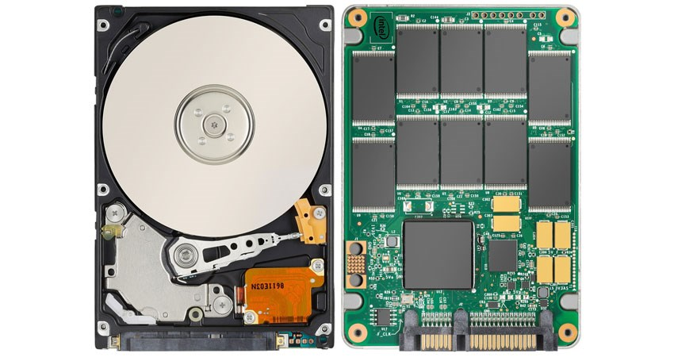

Hårddisken är en komponent som är minst lika viktig som de andra för att en dator ska fungera.
Dessa är till för att kunna lagra information för att på ett lättare sätt kunna arbeta i datorn genom att installera och använda program.
Man kan alltså kalla detta för datorns bibliotek då all information kring datorn lagras här.
Men de traditionella hårddiskarna som lagrar information, på en roterande disk, med hjälp utav magnetik har på senare år fått konkurrens av de moderna SSD-diskarna.
SSD-diskar (Solid State Drive) fungerar på så sätt att informationen istället lagras i elektroniska kretsar vilket i sin tur bidrar till att denna typ av hårddisk kan läsa och dela information på hastigheter över 3000 MB/s, till skillnad från den förstnämnda varianten med en läshastighet på ca 150 MB/s. Och eftersom att SSD-disken inte drivs av några mekaniska delar så är den även ett mycket energisnålare och snabbare sätt att lagra information på samtidigt som den blir okänslig för vibrationer till skillnad från den traditionella hårddisken som hade flertalet rörliga delar i sig.
SSD-diskar (Solid State Drive) fungerar på så sätt att informationen istället lagras i elektroniska kretsar vilket i sin tur bidrar till att denna typ av hårddisk kan läsa och dela information på hastigheter över 3000 MB/s, till skillnad från den förstnämnda varianten med en läshastighet på ca 150 MB/s. Och eftersom att SSD-disken inte drivs av några mekaniska delar så är den även ett mycket energisnålare och snabbare sätt att lagra information på samtidigt som den blir okänslig för vibrationer till skillnad från den traditionella hårddisken som hade flertalet rörliga delar i sig.
Men varför vill man då fortsätta att använda sig utav de traditionella hårddiskarna? De må vara mycket långsammare, men dessa har nämligen möjlighet att lagra mer information än en SSD-disk och därför väljer vissa användare att köpa en mekanisk hårddisk istället för en SSD för att lagringen i vissa fall är viktigare än hastigheten. I vissa fall kan man även kombinera dessa två komponenter för att få ut det maximalt bästa av två världar!
4 TB SSD-disk: Samsung 860 EVO
256 gb SSD-disk: Intel 545s
4 TB mekanisk hårddisk: Seagate IronWolf
72 TB mekanisk hårddisk: LaCie 12big Thunderbolt